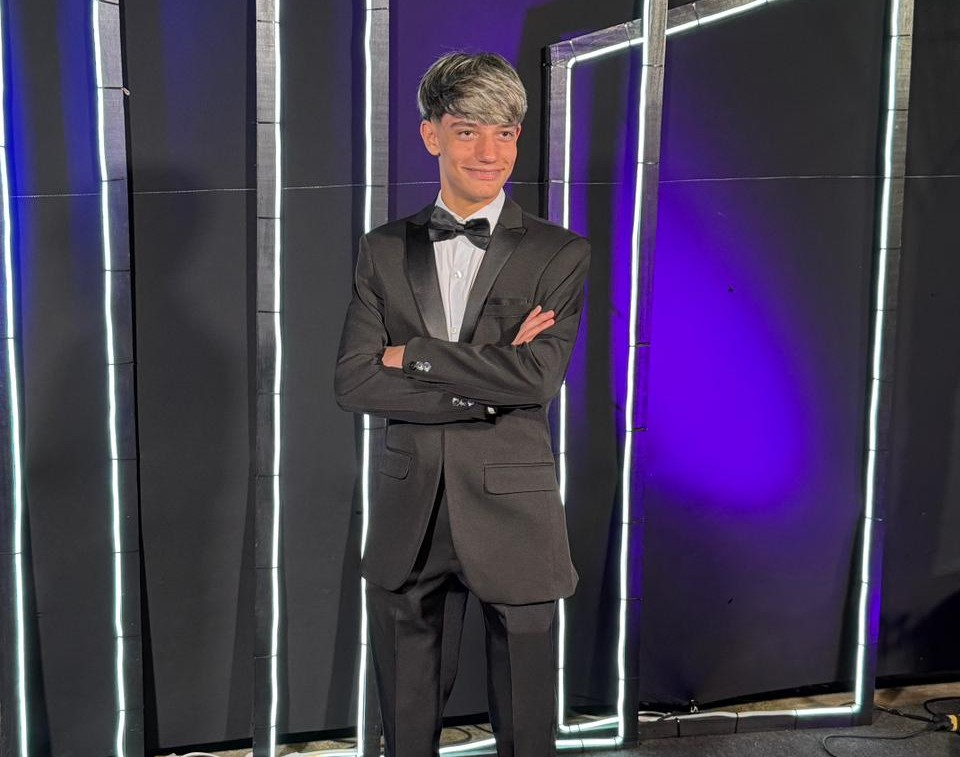
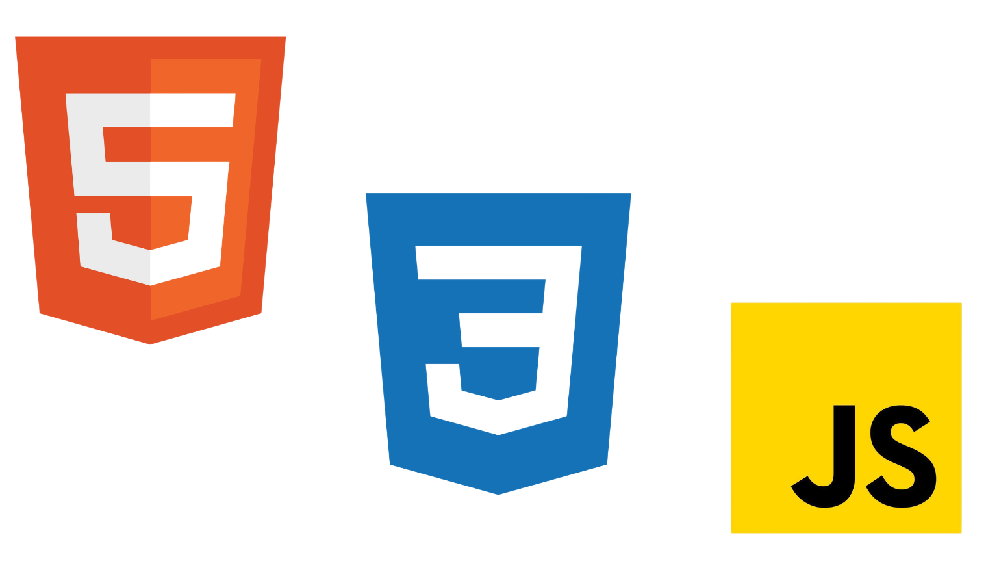
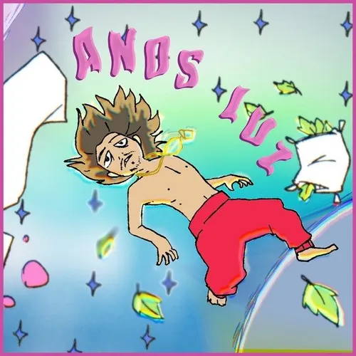

salve a imagem como ilustracao.jpg
Gabriel Falasco Pagano
Sobre mim
Meu nome é Gabriel Falasco Pagano, tenho 15 anos e atualmente curso o ensino médio integrado ao técnico em Multimídia no Senac. Gosto muito de jogos, tecnologia e música.
Além da escola
Certificações
Além de cursar o técnico em Multimídia, tenho dois certificados em linguagens de marcação: um em HTML5 e outro em CSS3. Também tenho um certificado de programação em JavaScript.

salve a imagem como certificacoes.png

salve a imagem como como-comecou.webp
Início
Como começou
Sempre gostei de criar usando tecnologia. Desde cedo, procuro expressar o que sinto em cada projeto, transformando referências e coisas de que já gosto em novas criações.
UM POUCO SOBRE MIM
Por que web design?
Escolhi o web design porque é uma área que está sempre se renovando e crescendo. Muitos interesses começam com uma pergunta: “como?” ou “por quê?”. Como já contei, sempre gostei de criar, mas nunca tive muita habilidade com trabalhos manuais. No web design, encontrei uma forma de expressar quem sou sem me preocupar se algo ficou torto ou se precisaria refazer à mão.
Tudo começa com uma ideia
Do Caos a
Criação
Da ideia ao visual, explorando diferentes formas de comunicar ideias e emoções
Entre em contato ↗